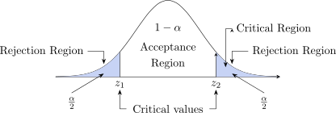
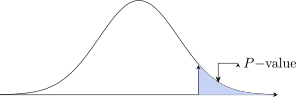

3 Statistical Hypothesis Testing
Deals with proving whether the given statement is true or false.
\(H_0:\) This is a positive statement which needs to be proved right or wrong (Null hypothesis).
Example
Children watch TV for 3 hours
\(H_0:\) children in Zambia watch TV for 3 hours per week.
\(H_0: \mu =3\)
\(H_0:\) There is no difference in performance between boys and girls.
\(H_0: \mu _1=\mu _2\).
\(H_1:\) Is called alternative hypothesis. [Negative Statement]
Example
\(H_1 : \mu \neq 3\)
\(H_1: \mu _1 \neq \mu _2\)
The Four Steps of Hypothesis Testing
- Set up the hypothesis
\(H_0:\) Null hypothesis which is positive statement to be proved.
\(H_1:\) Alternative hypothesis - Set up the level of significance \(\alpha =\hspace {0.3cm}\text {level of significance}\)
-
Test statistic
We calculate the statistic and possible statistic are- \(\displaystyle {Z=\frac {\overline {X}-\mu }{\text {S.e}}=\frac {\overline {X}-\mu }{\sigma /\sqrt {n}}\hspace {1cm}\text {or}\hspace {1cm}\frac {\overline {X}-\mu }{S/\sqrt {n-1}}\hspace {1cm}\text {or}\hspace {1cm}\frac {\overline {X}-\mu }{\widehat {S}/\sqrt {n}}}\)
-
\(\displaystyle {Z=\frac {\overline {X}-\mu }{\sigma /\sqrt {n}}\hspace {0.6cm}\text {for}\hspace {0.3cm}n= \text {large},\hspace {0.3cm} \sigma = \text {known}}\)
\(\displaystyle {t_{n-1}=\frac {\overline {X}-\mu }{\sigma /\sqrt {n}}\hspace {0.6cm}\text {for}\hspace {0.3cm} n<30,\hspace {0.3cm} \sigma =\text {unknown}}\)
\(\displaystyle {t_{n-1}=\frac {\overline {X}-\mu }{\widehat {S}/\sqrt {n}}\hspace {1cm}\text {and}\hspace {1cm}t_{n-1}=\frac {\overline {X}-\mu }{\sigma /\sqrt {n}}}\)
-
Difference between two means.
When \(n\) is large and \(\sigma _1\) and \(\sigma _2\) are known. \[Z=\frac {(\overline {X}_1-\overline {X}_2)-(\mu _1-\mu _2)}{\sqrt {\dfrac {\sigma ^2_1}{n_1}+\dfrac {\sigma ^2_2}{n_2}}},\hspace {2cm} Z=\frac {\overline {X}_1-\overline {X}_2}{\sqrt {\dfrac {\sigma ^2_1}{n_1}+\dfrac {\sigma ^2_2}{n_2}}}\]
\[t_{n_1+n_2-2}=\frac {\overline {X}_1-\overline {X}_2}{\sqrt {\dfrac {n_1S^2_1+n_2S^2_2}{n_1+n_2-2}\Bigg (\dfrac {1}{n_1}+\dfrac {1}{n_2}\Bigg )}}\hspace {0.6cm}n<30,\hspace {0.4cm}\sigma = \text {unknown}\]
Paired Test: \(\hspace {0.5cm} \displaystyle {t_{n-1}=\frac {\mu -\overline {d}}{\dfrac {\text {SD}}{\sqrt {n-1}}}}\)
\(\text {Significance of a proportion}\hspace {0.4cm} \displaystyle {Z=\frac {\widehat {P}-P}{\sqrt {\dfrac {P(1-P)}{n}}}}\hspace {0.3cm}\text {for large sample size.}\)
- \(\displaystyle {Z=\frac {\overline {X}-\mu }{\text {S.e}}=\frac {\overline {X}-\mu }{\sigma /\sqrt {n}}\hspace {1cm}\text {or}\hspace {1cm}\frac {\overline {X}-\mu }{S/\sqrt {n-1}}\hspace {1cm}\text {or}\hspace {1cm}\frac {\overline {X}-\mu }{\widehat {S}/\sqrt {n}}}\)
-
Critical Region

\(Z_{\alpha /2}\) undirected hypothesis tests, two tailed test \(\alpha =5\%\).
Interpretation: if the statistic \(Z\) falls in the critical region we reject \(H_0\) in favour of \(H_1\). If it does not, we fail to reject \(H_0\).
Say it that way, and not “\(H_1\) is true” or “\(H_0\) is true”. A test never establishes either hypothesis. Rejecting \(H_0\)
says the data would be unusual if \(H_0\) held, which is evidence against it – not proof of \(H_1\). Failing to reject
says only that the data are consistent with \(H_0\); they may be consistent with a great many other
values too, particularly when the sample is small. Absence of evidence is not evidence of
absence.
We can use the P-value for interpretation given statistic \(\alpha =0.025\) , \(Z=2.13\)

\begin {align*} P(Z>2.13) &=1-P(Z\leq 2.13)=1-0.9834\\ &=0.016 \end {align*}
Because the test is two-tailed, a result this far from the centre is equally surprising in either direction, so the \(P\)-value is both tails together: \[P\text {-value} = 2\times P(Z>2.13) = 2\times 0.0166 = 0.033.\] Since \(0.033 < \alpha = 0.05\), we reject \(H_0\).
3.1.1 What the \(P\)-value does not mean
3.2 Test for the Variance and Standard Deviation
3.3 Type I and Type II Errors
3.4 Test of Independence and Goodness of Fit Test
3.5 Practice problems
Questions on this section
Stuck on something here? Ask below and it stays attached to this topic.